Код неисправности и методы устранения
Использовать Специальный инструмент и оборудование (см. таблицу 5.2.1 Специальный инструмент) для устранения неисправностей. Перед устранением неисправностей обеспечить защиту от высокого напряжения, устранение неисправностей, связанных с высоковольтными цепями, требует отключения высокого напряжения автомобиля. Считать сохраненный в контроллере автомобиля Код неисправности с помощью Диагностический прибор и записать; устранение неисправностей, связанных с Код неисправности аккумуляторной батареи в сборе, выполнять в соответствии с процедурой устранения соответствующих Код неисправности ниже, как показано в таблице: P1B4D Произошло столкновение

P1B43 Неисправность Сигнал столкновения SRS (способ ремонта см. P1B4D) P1B41 Неисправность изоляции / P1B53 Предупреждение об изоляции Решение по ремонту неисправности изоляции / предупреждения об изоляции на стороне аккумуляторной батареи
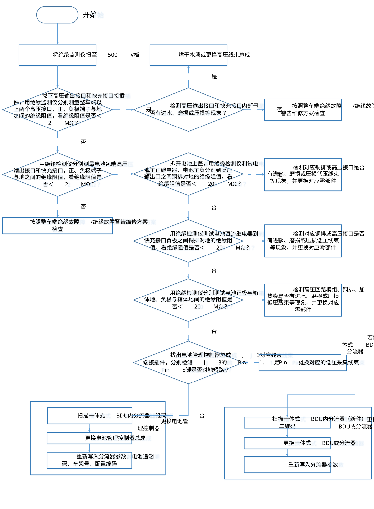
Решение по ремонту неисправности изоляции / предупреждения об изоляции на стороне автомобиля
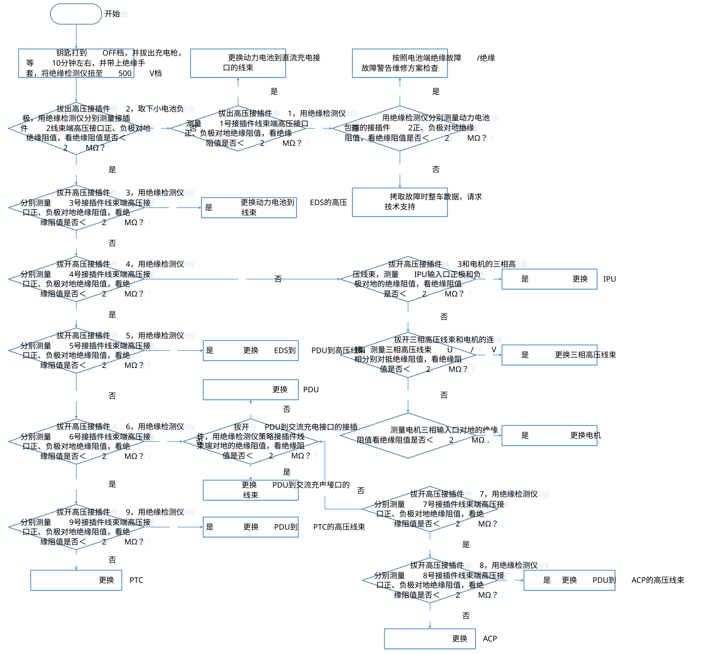
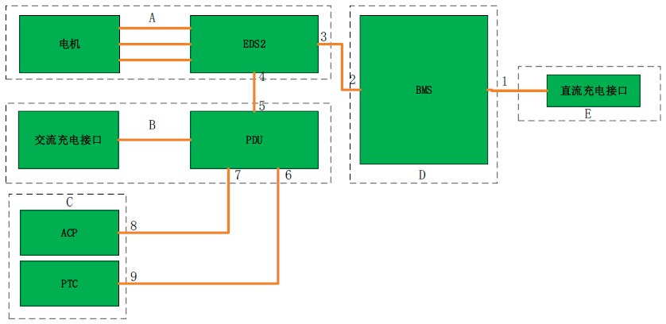
P1B4E Обрыв цепи высоковольтной блокировки на стороне аккумуляторной батареи
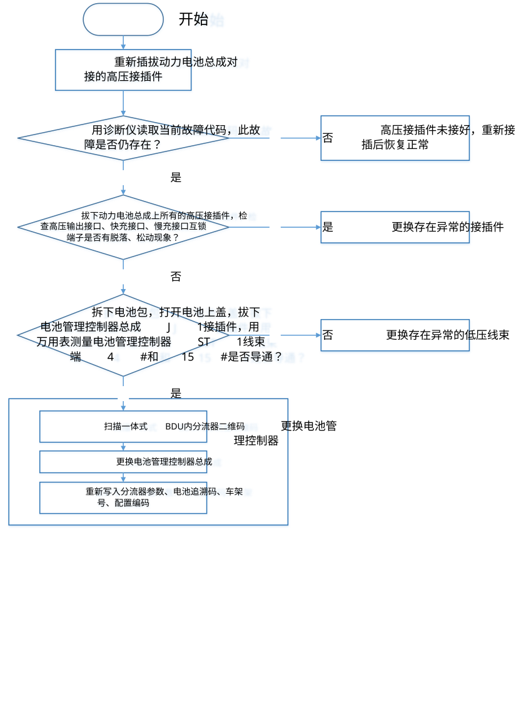
P1B4F Короткое замыкание цепи высоковольтной блокировки на VCC

P1B50 Короткое замыкание цепи высоковольтной блокировки на GND (способ ремонта см. P1B4F) P1B54 Сбой самодиагностики
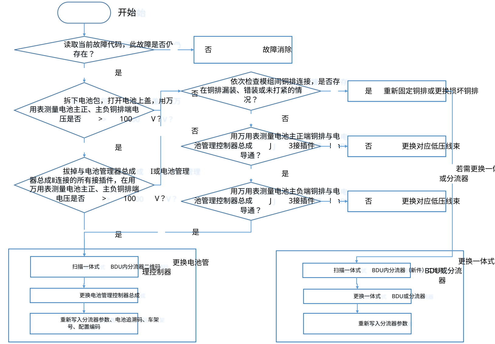
P1B55 Короткое замыкание высоковольтной цепи

P1B56 Обрыв высоковольтной нагрузки
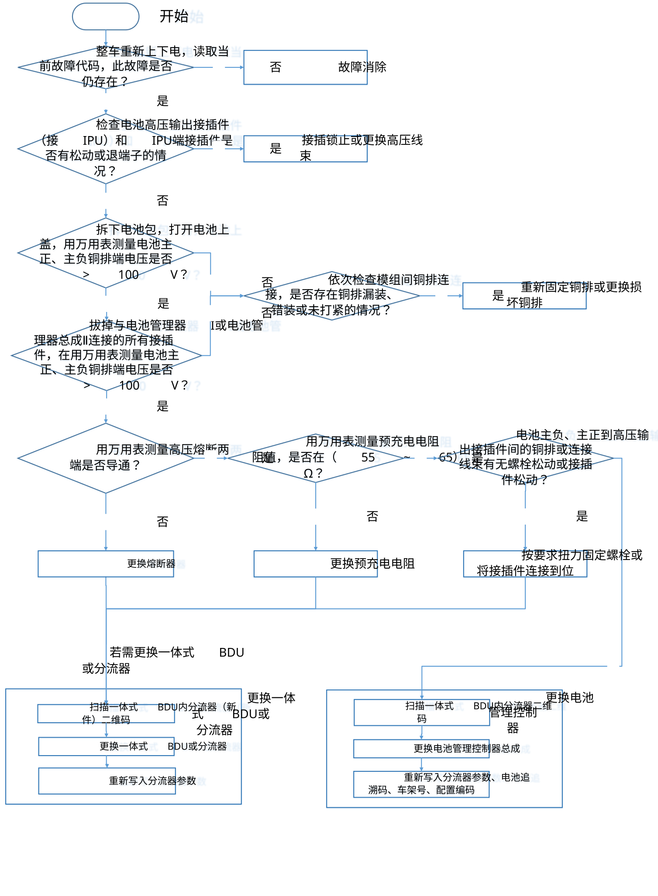
P1B60 Неисправность обрыва цепи на клемме управления драйвером нижнего плеча главного положительного реле

P1B61 Неисправность короткого замыкания на VCC на клемме управления драйвером нижнего плеча главного положительного реле (способ проверки и ремонта см. P1B60) P1B62 Неисправность короткого замыкания на GND на клемме управления драйвером нижнего плеча главного положительного реле (способ проверки и ремонта см. P1B60) P1B66 Неисправность обрыва цепи на клемме управления драйвером нижнего плеча реле предварительной зарядки (способ проверки и ремонта см. P1B60) P1B67 Неисправность короткого замыкания на VCC на клемме управления драйвером нижнего плеча реле предварительной зарядки (способ проверки и ремонта см. P1B60) P1B68 Неисправность короткого замыкания на GND на клемме управления драйвером нижнего плеча реле предварительной зарядки (способ проверки и ремонта см. P1B60) P1B7C Неисправность обрыва цепи на клемме управления драйвером нижнего плеча реле зарядки постоянным током (способ проверки и ремонта см. P1B60) P1B7D Неисправность короткого замыкания на VCC на клемме управления драйвером нижнего плеча реле зарядки постоянным током (способ проверки и ремонта см. P1B60) P1B7F Неисправность короткого замыкания на GND на клемме управления драйвером нижнего плеча реле зарядки постоянным током (способ проверки и ремонта см. P1B60) P1B92 Неисправность обрыва цепи на клемме управления драйвером верхнего плеча реле 1 (способ проверки и ремонта см. P1B60) P1B93 Неисправность короткого замыкания на VCC на клемме управления драйвером верхнего плеча реле 1 (способ проверки и ремонта см. P1B60) P1B94 Неисправность короткого замыкания на GND на клемме управления драйвером верхнего плеча реле 1 (способ проверки и ремонта см. P1B60) P1B8B Неисправность обрыва цепи на клемме управления драйвером нижнего плеча реле зарядки постоянным током (минус) (способ проверки и ремонта см. P1B60) P1B8C Неисправность короткого замыкания на VCC на клемме управления драйвером нижнего плеча реле зарядки постоянным током (минус) (способ проверки и ремонта см. P1B60) P1B90 Неисправность короткого замыкания на GND на клемме управления драйвером нижнего плеча реле зарядки постоянным током (минус) (способ проверки и ремонта см. P1B60)
U1C80 BMS не получает CAN-сообщения взаимодействия от VCU

U1C8A Неисправность потери кадров напряжения IPU
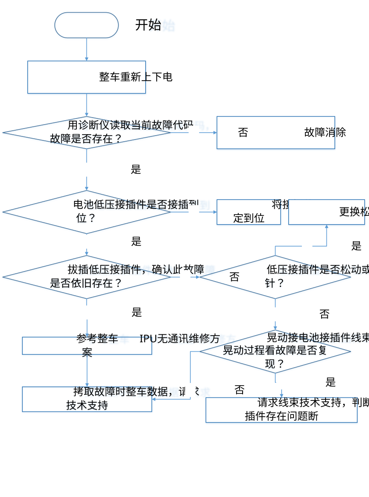
U1C84 BMS не получает CAN-сообщения взаимодействия от зарядного устройства OBC

U1C86 Главная плата BMS не получает CAN-сообщения взаимодействия от датчика тока

Назначение контактов разъема датчика тока следующее:

P1D01 Неисправность достоверности сбора данных общего тока

P1B91 Неисправность датчика общего тока (способ проверки и ремонта см. P1D01)

P1D04 Неисправность достоверности сбора данных напряжения элемента

P1B08 Неисправность третьего уровня слишком высокого напряжения элемента аккумуляторной батареи (способ проверки и ремонта см. P1D04) P1B25 Неисправность четвертого уровня слишком высокого напряжения элемента аккумуляторной батареи (способ проверки и ремонта см. P1D04) P1B2D Неисправность пятого уровня слишком высокого напряжения элемента аккумуляторной батареи (способ проверки и ремонта см. P1D04) P1D03 Неисправность достоверности сбора данных температуры
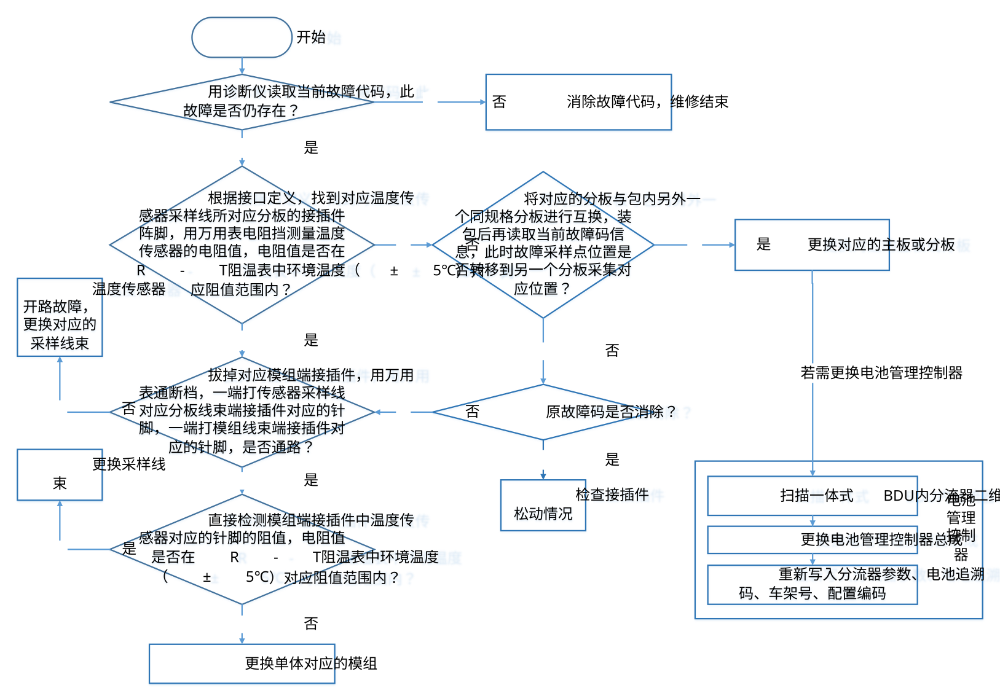

P1B2F Неисправность пятого уровня слишком высокой температуры модуля аккумуляторной батареи (способ проверки и ремонта см. P1D03) P1B29 Неисправность четвертого уровня слишком высокой температуры модуля аккумуляторной батареи (способ проверки и ремонта см. P1D03) P1B14 Неисправность третьего уровня слишком высокой температуры модуля аккумуляторной батареи (способ проверки и ремонта см. P1D03) P1B02 Неисправность третьего уровня слишком высокого общего напряжения аккумуляторной батареи
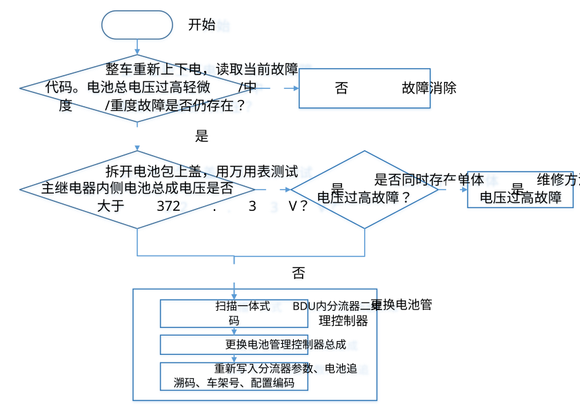
P1B23 Неисправность четвертого уровня слишком высокого общего напряжения аккумуляторной батареи (способ проверки и ремонта см. P1B02) P1B1A Неисправность пятого уровня слишком высокого общего напряжения аккумуляторной батареи (способ проверки и ремонта см. P1B02) P1B05 Неисправность третьего уровня слишком низкого общего напряжения аккумуляторной батареи

P1B24 Неисправность четвертого уровня слишком низкого общего напряжения аккумуляторной батареи (способ проверки и ремонта см. P1B05) P1B1B Неисправность пятого уровня слишком низкого общего напряжения аккумуляторной батареи (способ проверки и ремонта см. P1B05) P1B0B Неисправность третьего уровня слишком низкого напряжения элемента аккумуляторной батареи
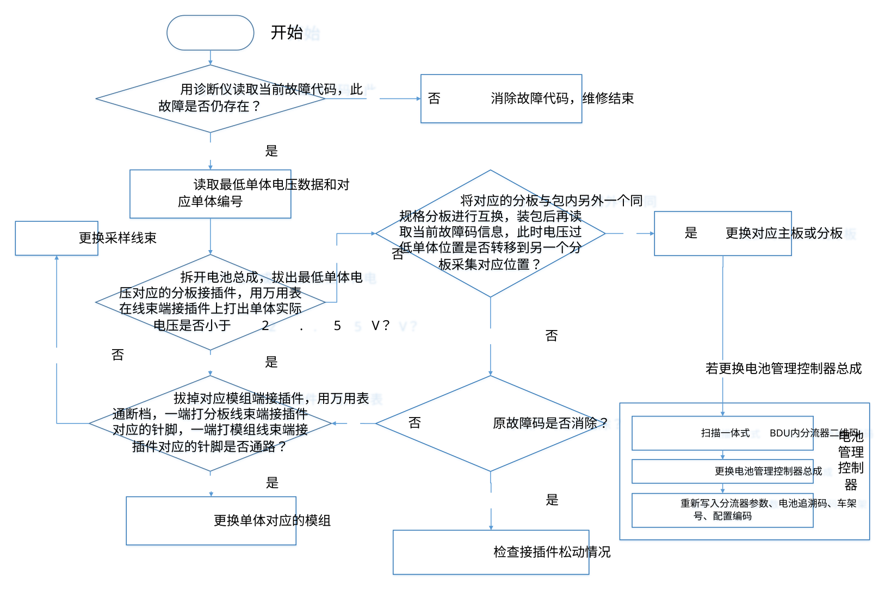
P1B26 Неисправность четвертого уровня слишком низкого напряжения элемента аккумуляторной батареи (способ проверки и ремонта см. P1B0B) P1B2E Неисправность пятого уровня слишком низкого напряжения элемента аккумуляторной батареи (способ проверки и ремонта см. P1B0B) P1B30 Неисправность постоянно замкнутого механического контакта высокого напряжения главного положительного реле
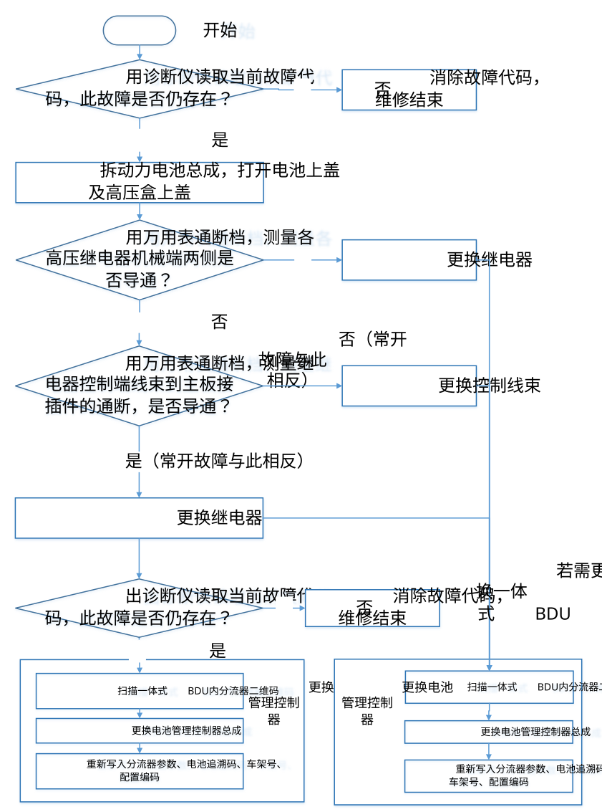
P1B34 Неисправность постоянно замкнутого механического контакта высокого напряжения реле предварительной зарядки (способ проверки и ремонта см. P1B30) P1B49 Неисправность постоянно замкнутого механического контакта реле зарядки постоянным током (способ проверки и ремонта см. P1B30) P1B31 Неисправность постоянно разомкнутого механического контакта высокого напряжения главного положительного реле (способ проверки и ремонта см. P1B30) P1B48 Неисправность постоянно разомкнутого механического контакта реле зарядки постоянным током (способ проверки и ремонта см. P1B30) P1B44 Неисправность сбоя предварительной зарядки

P1D00 Неисправность достоверности сбора данных общего напряжения
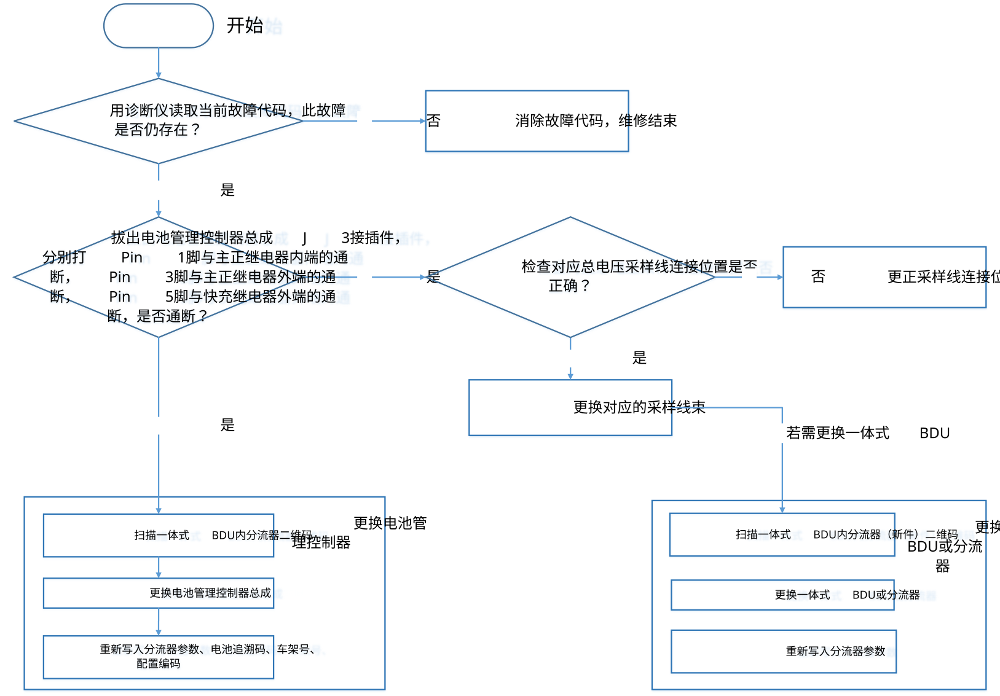
P1B21 Неисправность третьего уровня слишком высокого тока зарядки

P1B27 Неисправность четвертого уровня слишком высокого тока зарядки (способ проверки и ремонта см. P1B21) P1B2B Неисправность пятого уровня слишком высокого тока зарядки (способ проверки и ремонта см. P1B21) P1B22 Неисправность третьего уровня слишком высокого тока разрядки
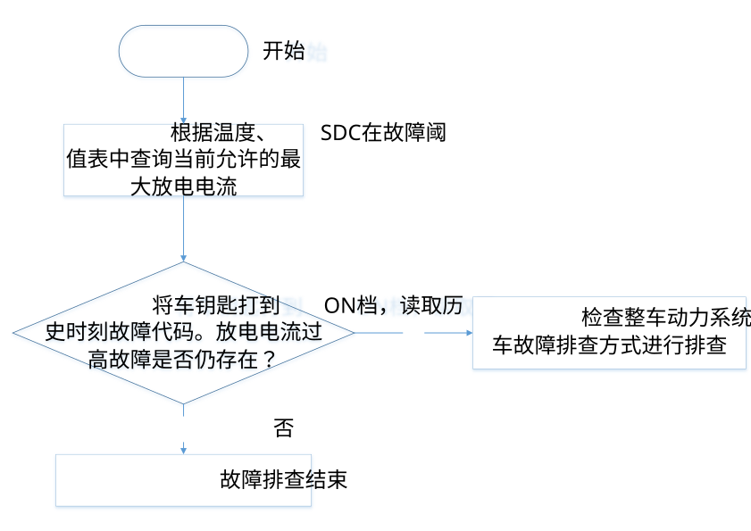
P1B28 Неисправность четвертого уровня слишком высокого тока разрядки (способ проверки и ремонта см. P1B22) P1B2C Неисправность пятого уровня слишком высокого тока разрядки (способ проверки и ремонта см. P1B22) P1B39 Серьезное превышение мощности разрядки (способ проверки и ремонта см. P1B22)
P1B57 Неисправность теплового разгона аккумуляторной батареи
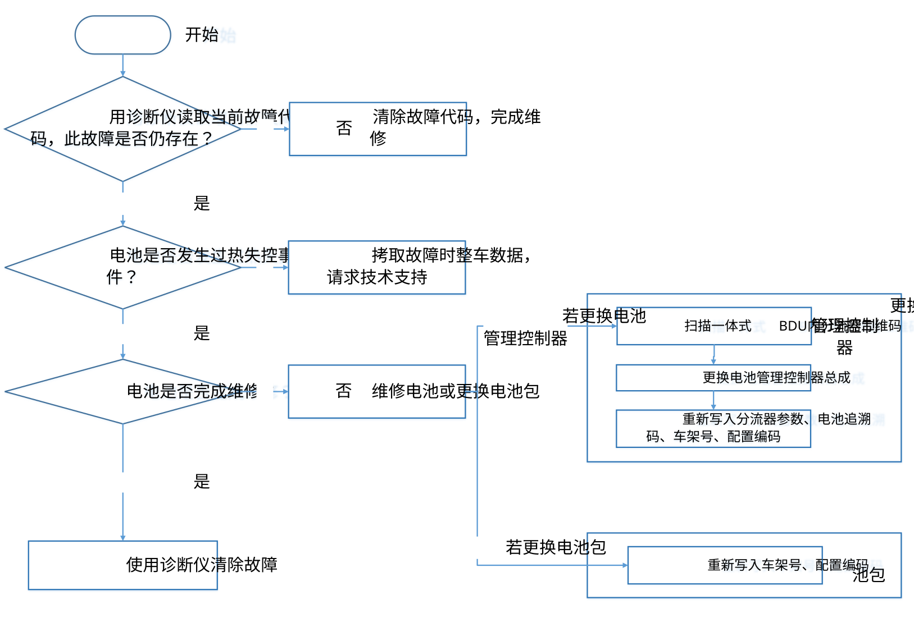
P1B58 Историческая неисправность не позволяет включить высокое напряжение

P1D09 Неисправность достоверности сбора данных напряжения аккумуляторной батареи 12V

P1D44 Неисправность контрольной суммы идентификатора архитектуры
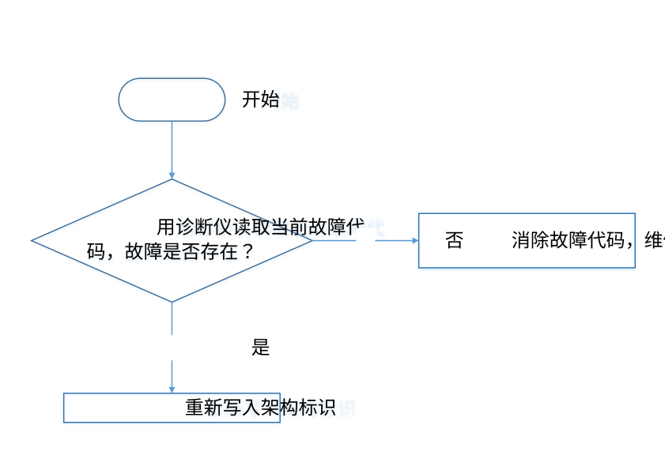
P1D0B~ P1D11, P1D13~ P1D1B Неисправность достоверности температуры платы
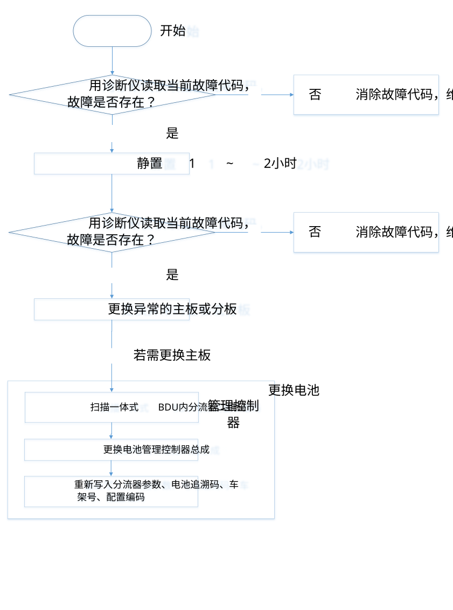
U1C96 Неисправность обрыва одной линии гирляндной цепи
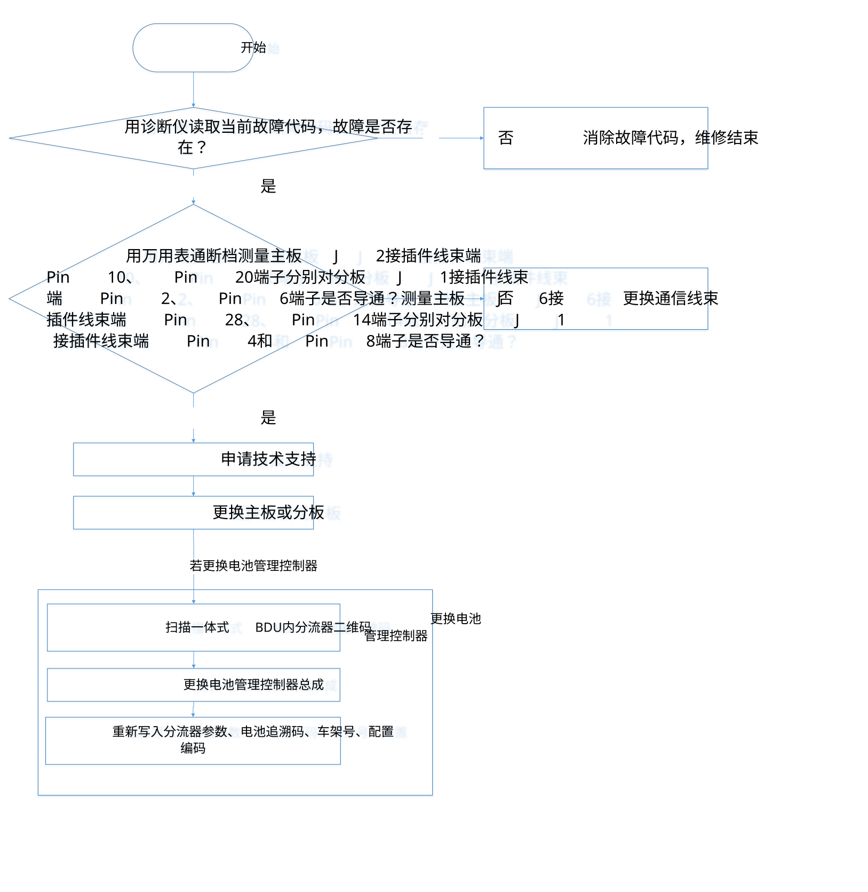
U1C82 Главная плата BMS не получает CAN-сообщения взаимодействия от дочерних плат (способ проверки и ремонта см. U1C96) P1D20 Неисправность сброса микросхемы (способ проверки и ремонта см. U1C96)